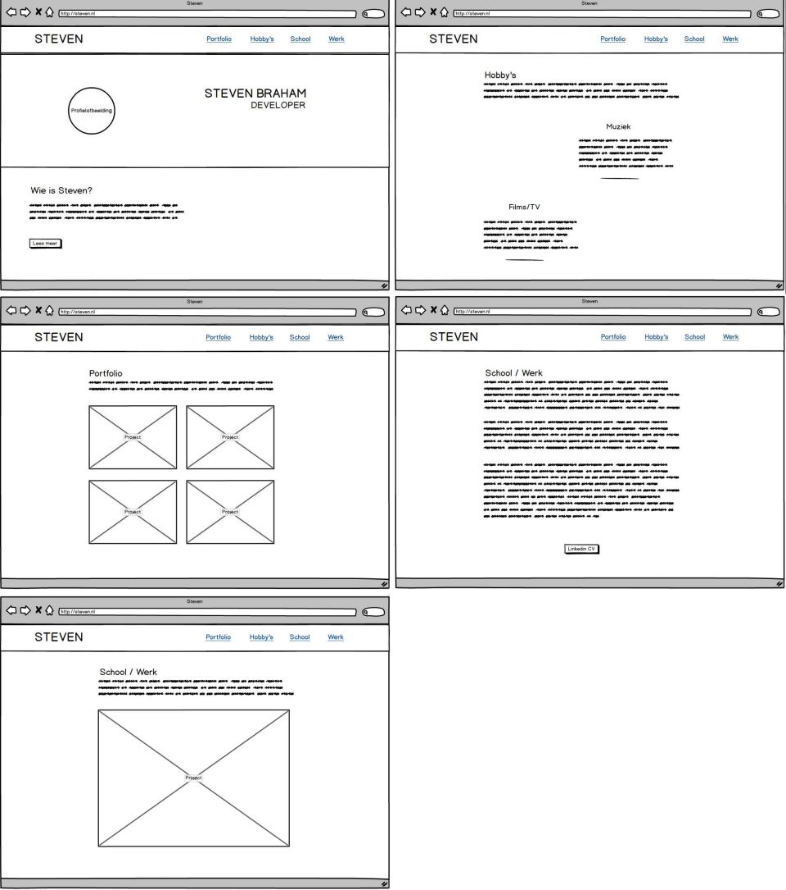
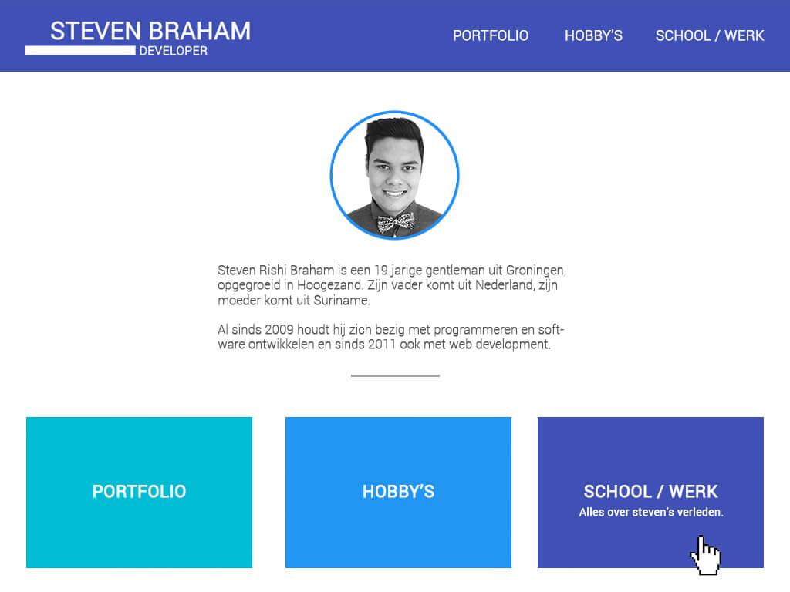
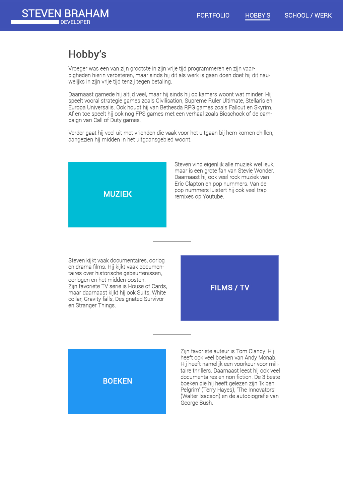
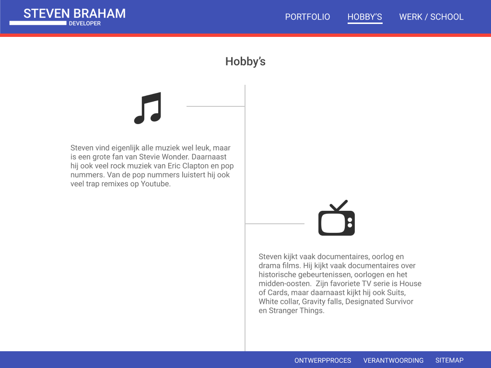
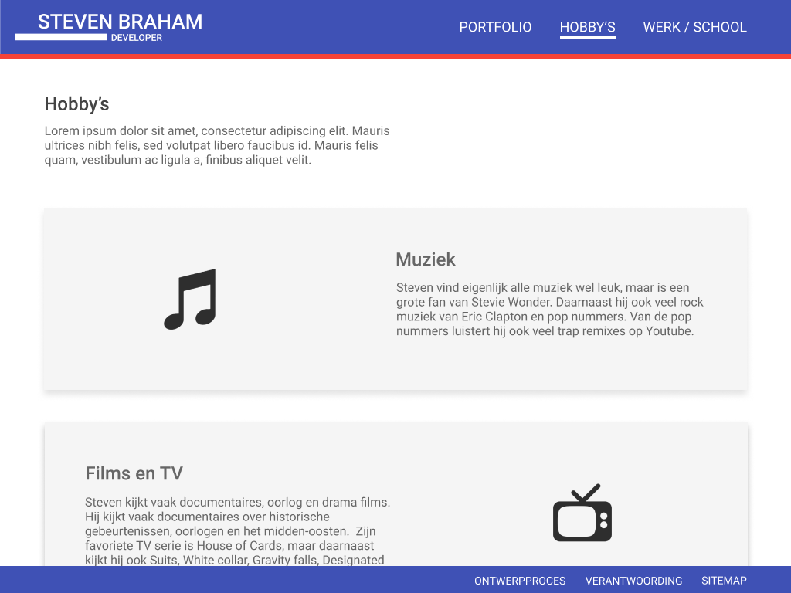
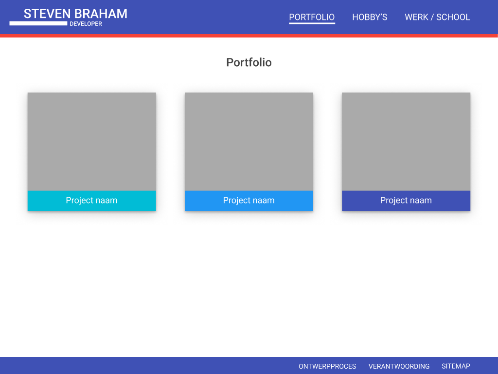
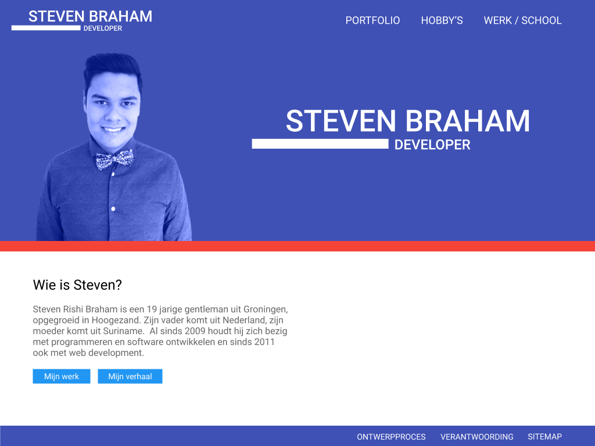
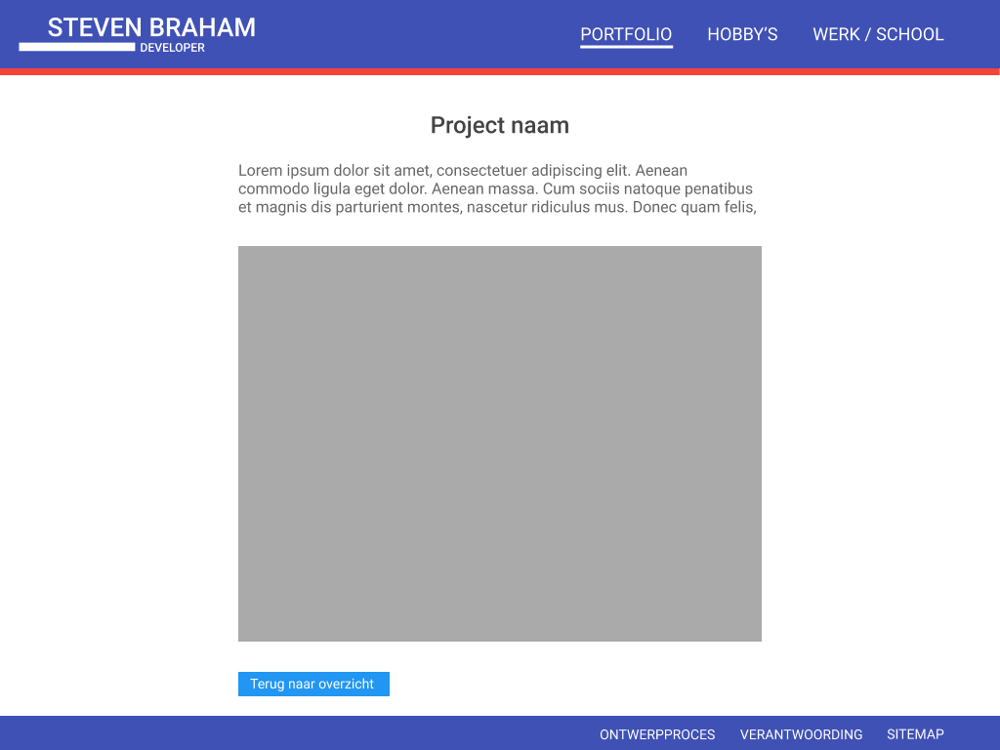
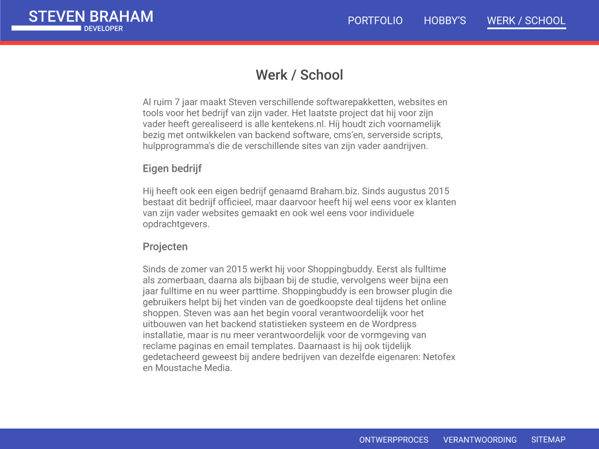

Ontwerpproces
Deze website is tot stand gekomen na het maken van een aantal belangrijke stappen: interviews afnemen, lo-fi wireframes bouwen en uiteindelijk een hi-fi wireframe designen die een 'sausje' krijgt van een verkregen moodboard. Op deze pagina beschrijf ik het gehele proces.
Wireframes
De start van het ontwerpproces is het afnemen van een interview met de klant, Steven Braham. Ik heb hem vooral gevraagd naar de content die hij op zijn personal website zou willen laten zien. Ik heb toen de keuze gemaakt om de volgende pagina's te ontwerpen:
- Homepage
- Hobby's
- Portfolio
- Portfolio detailpagina's
- Tekstpagina over werk en school
Deze pagina's heb ik eerst als lo-fi wireframe uitgewerkt met behulp van myBalsamiq.
In deze lo-fi heb ervoor gekozen om een strakke, simpele homepagina te maken waar je direct Steven's profielafbeelding en logo ziet, met een korte introductietekst. Op deze manier weet je snel waar je bent en wat er te vinden is op deze website. Linksboven staat het logo van de website; deze is klikbaar en dient als 'terug naar de homepagina' knop. Rechtsboven staat de primaire navigatie. De boven- en onderbalk blijft hetzelfde op elke pagina zodat er een gevoel van 'plaats' ontstaat.
Wanneer je naar de portfolio pagina navigeert, kom je een grid van projecten tegen, waarbij elk element een afbeelding bevat. Doordat mensen vaak keuzes maken op basis van wat ze zien, heb ik de elementen een grote preview-afbeelding gegeven.
Om toch wat variatie in de pagina's aan te brengen, heb ik de hobby's pagina een wisselende links- of rechts-uitlijning gegeven; het voegt ook wat van 'speelsheid' toe.
Ten slotte heeft de algemene tekstpagina een maximum breedte van ongeveer 80 letters, voor optimale leesbaarheid.
Hieronder zie je alle pagina's op een rijtje.
Moodboard
Na het maken van de lo-fi wireframes heb ik een 'designsausje' toegevoegd op basis van Nick Biever's moodboard en creatieve rationale. De belangrijkste stijlelementen en designkeuzes waren:
- Strakke uitlijning en vormen
- Blauwe tinten
- Schreefloze lettertypen ('Roboto')
Ook staat het logo van Google's 'Material design' in het moodboard, dus heb ik ook gezocht naar deze stijl. De designrichting van 'Material design' werkt goed samen met de richting die Nick beschreven had.

Eerste ontwerp
Met gebruikt van Photoshop heb ik op basis van de bovengenoemde punten een design gemaakt. Ik heb de blauwe tinten uit het moodboard overgenomen en op verschillende plekken gebruikt: de header, footer, buttons en achtergronden.
Ik heb de strakke, minimale uitlijning uit Nick's moodboard overgenomen, tezamen met zijn gekozen schreefloze lettertype: 'Roboto'.
De leesbaarheid wordt verbeterd door het gebruik van grijze tekst in plaats van zwarte tekst.
Om navigatie een gevoel van plaats en richting te geven, heb ik onder de actieve navigatie-elementen een streepje gezet.
 Eindproduct
Ik was niet helemaal tevreden met mijn eerste ontwerp. Niet alle elementen waren op een duidelijk 'grid' uitgelijnd en er zat geen eenheid in: de homepagina bevatte gekleurde, klikbare blokken die als navigatie bedoeld waren. Op de hobby's pagina komen visueel vergelijkbare blokken terug, maar ze zouden hier niet klikbaar zijn of als navigatie-element dienen. De eindgebruiker zal dit niet verwachten en in de war raken.
Later vond ik een online tool genaamd 'Figma', waarmee je gemakkelijk designs kan bouwen. het gaf mij weer een frisse blik op het design. Uiteindelijk heb ik alle elementen goed uitgelijnd op een grid en consistentie aangebracht in de elementen.
Om het design nog wat dichter bij Nick's moodboard te brengen, heb ik onder de header een rode balk toegevoegd.
Hieronder zie je het ontwerp van de hobby's pagina.
Deze pagina heb ik later aangepast omdat ik de middenlijn en 'takken' eigenlijk best vreemd vond. Ik heb uiteindelijk elke hobby simpelweg in een vak geplaatst, terwijl die afwisselende uitlijning is gebleven.
Ook de portfolio pagina is wat opgefrist; elk element in het overzicht bevat nu een gekleurde titelbalk zodat het duidelijk is hoe elk project heet.
Hieronder zie je de rest van de pagina's.
  Laatste veranderingen
Tijdens het bouwen van de website heb ik nog wat kleine dingen veranderd. Zo heb ik de midden uitlijning van de kop op de tekstpagina's weggelaten voor consistentie met de andere koppen. De portfolio detailpagina heeft nu een lijst met gebruikte tools in plaats van een tekst.
Om de website wat minder 'statisch' wat 'speels' toe te voegen, heb ik de navigatie-elementen een geanimeerd balkje als roll-over gegeven en een fade-in animatie op de meeste contentblokken toegevoegd.